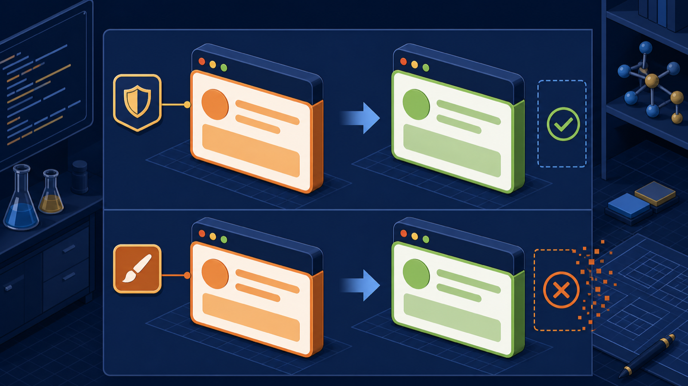
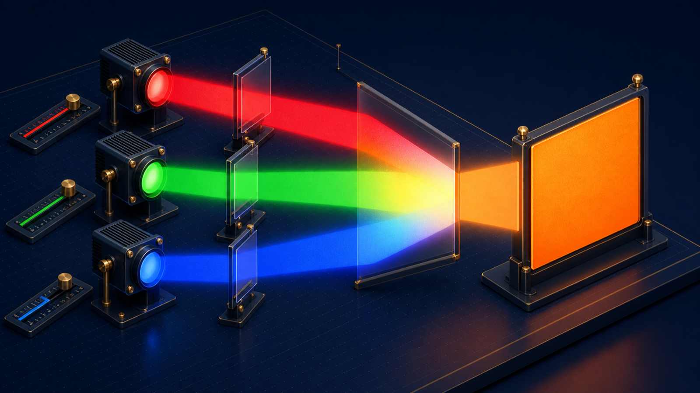
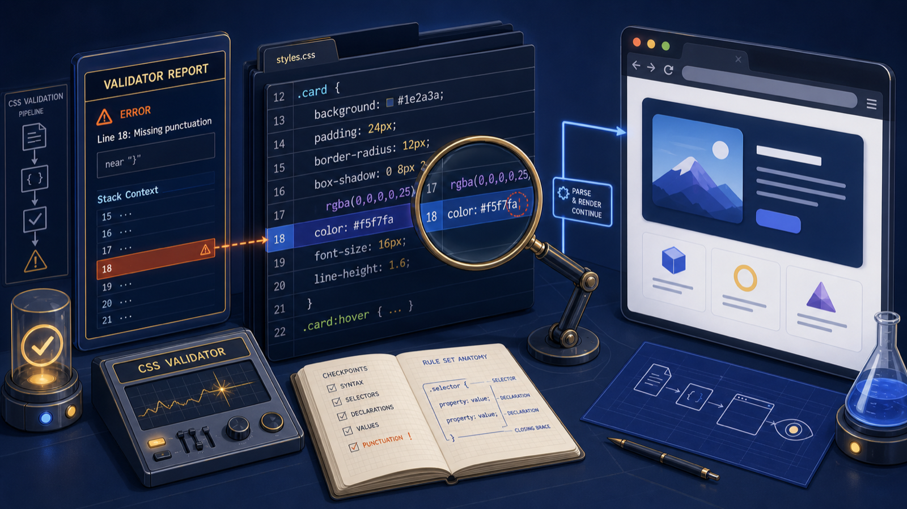
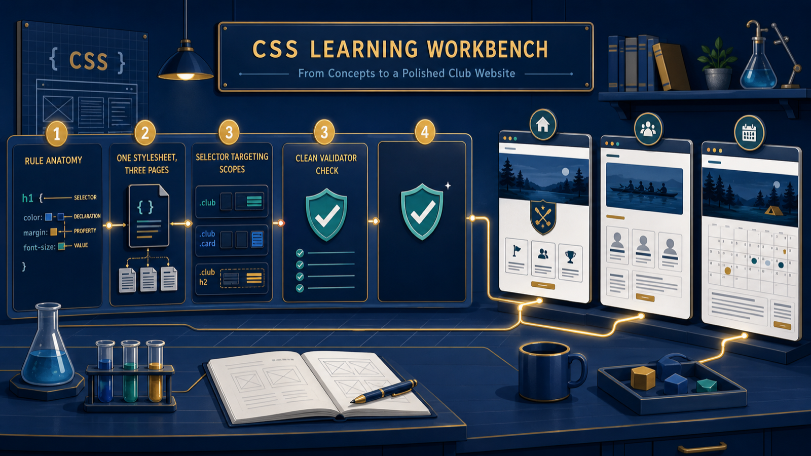

Connect
Choose inline, internal, or external CSS for the job.
The site works. Why does it still look gray?
Choose inline, internal, or external CSS for the job.
Aim element, class, and id selectors by role.
Use HTML and CSS validators to repair defects.
h1 {
color: #1a5e5e;
}
Which elements change? What setting do they receive?
footer { background-color: #1a5e5e; }Name: selector, property, and value.
style="..."One element
<style>One page
<link>Every linked page
<link rel="stylesheet" href="club-styles.css">Each page opts in with one link in its <head>.
Your selector decides the reach before any declaration runs.
footer
All matching elements
.deadline
Chosen by a reusable role
#meeting-times
Unique on one page
footer · .deadline · #announcements-banner
.deadlineStill true after a rebrand
.orange-boxBecomes a lie when colors change
body {
background-color: #fac78d;
color: #333333;
}Ink on light sand
Approved pairingA readable pairing earns its place. Color alone proves nothing.
teal
Fast test
#008080
#268080
Exact palette value
rgb(38, 128, 128)
Same club teal
f4 red near full
a2 green in the middle
59 blue kept low

#deb887
#5e9959
#333333

Look one declaration up for a missing semicolon.
Link club-styles.css from every page.
Use element, class, and id selectors.
Move one leftover inline style.
Check three HTML files and one CSS file.
Estimated lab time: 5-6 hours · Submit the complete zipped site folder.

Exit ticket: Why can one CSS file change the whole site without changing what its content means?
Next: use the box model to give every colored region space.